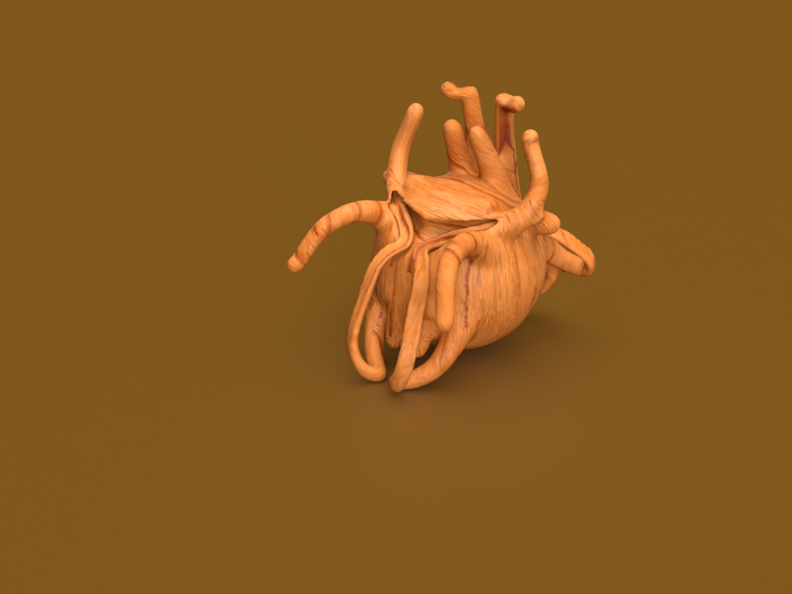
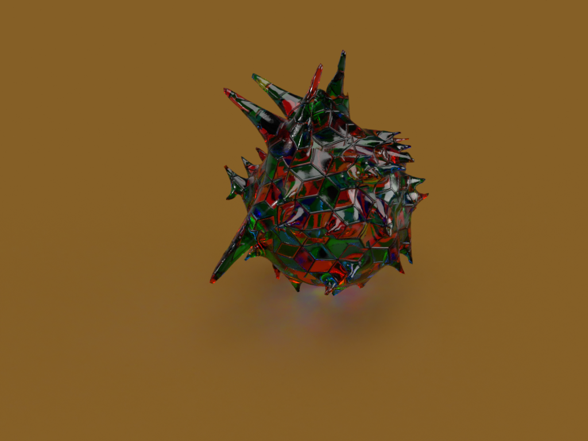
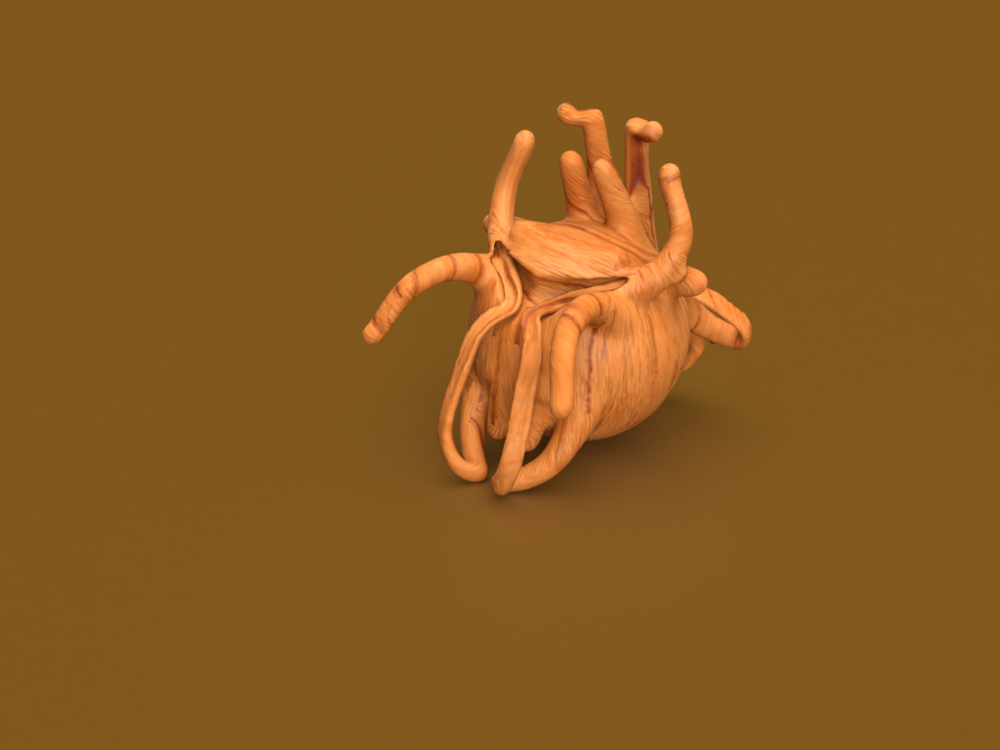
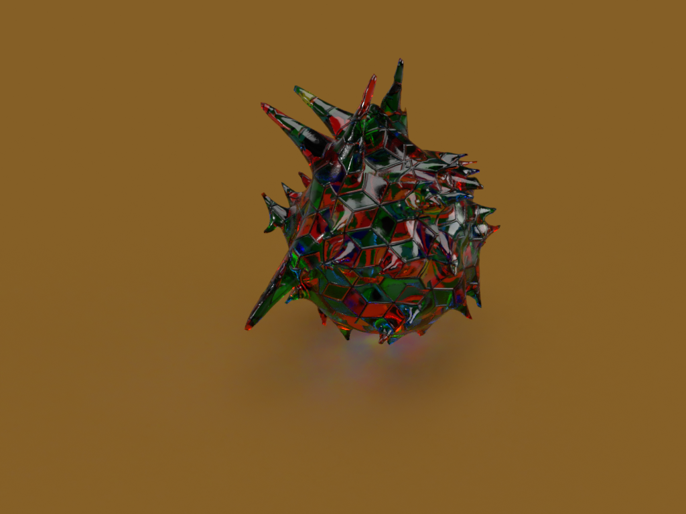
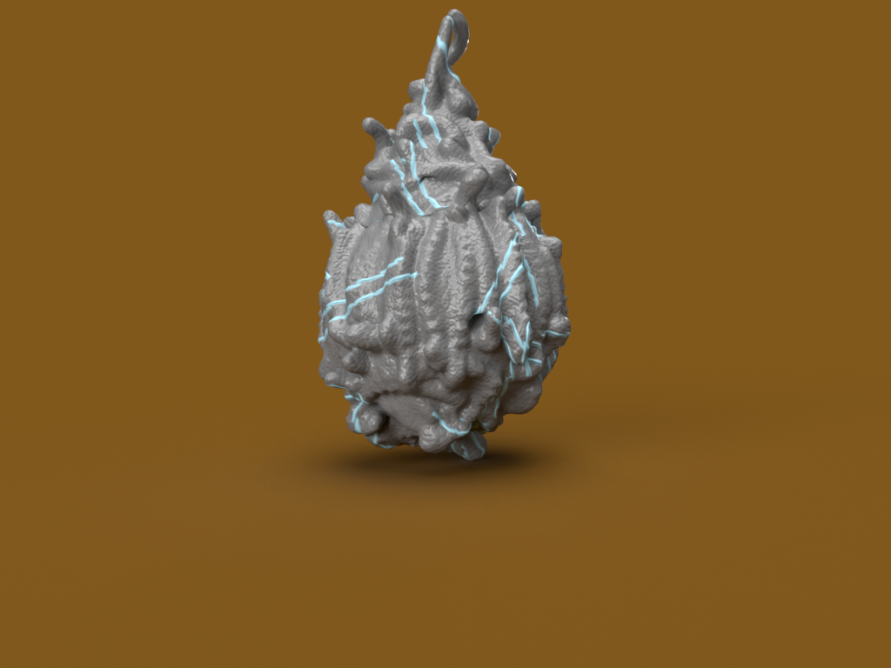
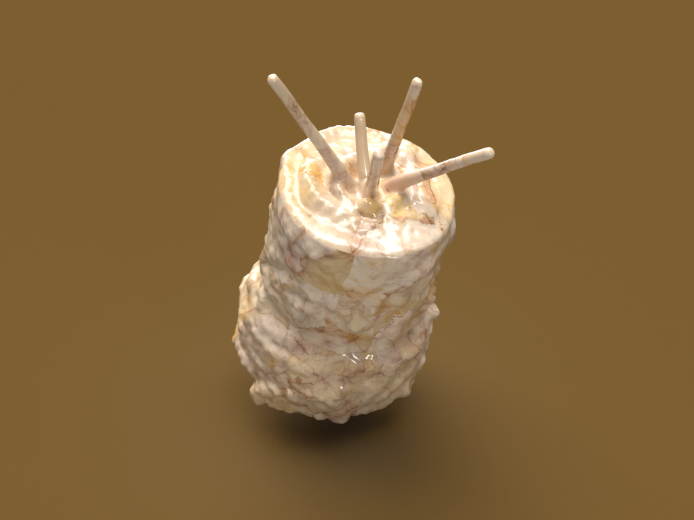
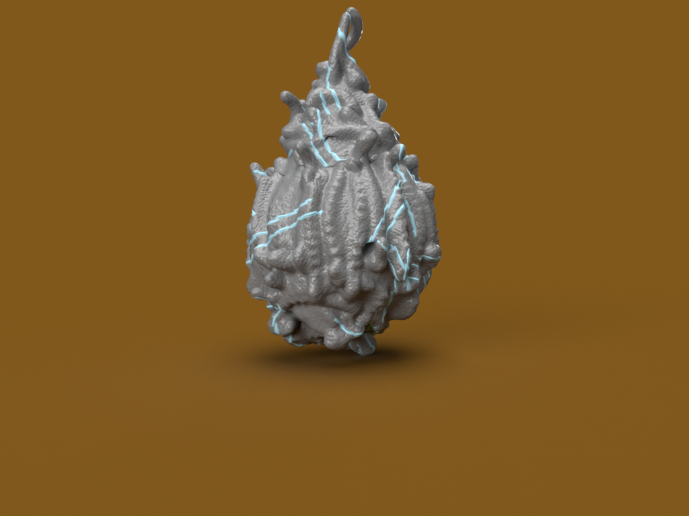
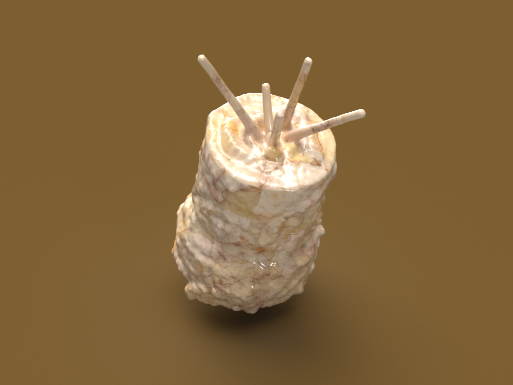

 



I built this museum barrowing element from the famous Iranian tomb named tomb of Hafez. I also tried to add my own design elements such as the wall to give more importance to the main museum part, basically making it be in focus by tunneling the audience eyes as they come through to visit it, materials I used were mainly cement and metal as they fit well with desert style and semi-arid background I was going for. As for art works I wanted to use mostly statues as they are more fitting in an open environment museum due to elements such as rain, heat and etc.